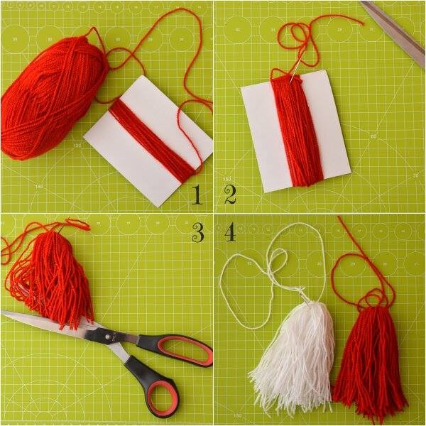
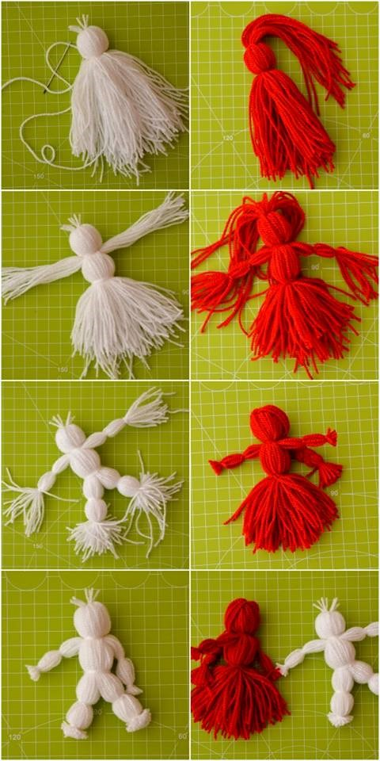

Nr.1 - Februarie 2015
Când ai descoperit că îți place acest domeniu și că merită să muncești pentru a obține performanțe?
Olimpiada de lingvistică este un concurs mai special, care are ca obiectiv descoperirea şi înţelegerea
de către elevi a algoritmului în baza căruia se dezvoltă competenţa de comunicare lingvistică, indiferent de idiom, grai şi dialect.
Elevii sunt provocaţi la o abordare transdisciplinară a comunicării, din punct de veder lingvistic şi cultural, ce presupune logică,
perspicacitate, analogie, conexiuni culturale şi, evident, inteligenţă lingvistică. Comisia de elaborare a subiectelor şi de evaluare
a lucrărilor a fost formată numai din profesori ai Facultăţii de Litere. Faza naţională a concursului se va desfăşura în 2015.
Ideea unui concurs de lingvistică mi s-a părut foarte interesantă, așa că nu am ezitat să mă înscriu.
De mică am fost pasionată de limbile străine, învățând la școală engleza și franceza, în timp ce acasă am studiat de una singură spaniola și italiana.
Participând pentru prima oară la această olimpiadă, subiectele reprezentau în întregime o noutate,
iar aici meritul îi revine doamnei profesor Roxana Prisacaru, care m-a pregătit pentru această competiție, explicându-mi modul abordare sau de redactare al subiectelor.
Ce sfaturi le dai celor care își doresc să participe la alte olimpiade?
Îi încurajez pe toți cei care sunt pasionați de un anumit domeniu să nu ezite în a se înscrie la diverse concursuri. Chiar dacă nimeni nu îți asigură succesul la o primă participare, concursurile și olimpiadele școlare reprezintă un mod de verificare și de îmbogățire a cunoștințelor tale.
Unde dorești să îți continui studiile ?
După terminarea liceului doresc să studiez Computer Science la una din universitățile europene, pentru a mă putea specializa mai târziu pe domeniul care mă pasionează.
În ce alte activități mai ești implicată și la ce alte proiecte ai mai participat?
Încă din clasa a IX-a sunt membră a organizației People to People din Roman.
Această organizație mi-a deschis orizonturile și pot spune că prin acțiunile de voluntariat la care am luat parte m-am format ca persoană.
Din clasa a X-a am ocupat funcția de Coordonator de Relații Publice, însă am organizat și diverse proiecte locale, precum concursul
de tinere talente „Romanvodiștii au talent”, ajuns la cea de a III-a ediție, proiecte umanitare sau acțiuni de strângere de fonduri.
Ca răsplată pentru implicarea mea în cadrul People to People - Capitolul din Roman, am câștigat una dintre bursele oferite de către
Family Hall Foundation pentru a participa la Global Youth Forum - Conferința Globală de Tineret, ce s-a desfășurat în noiembrie 2013 în Washington D.C.
Unde te vezi peste câțiva ani?
Peste ani mă văd lucrând în domeniul securității datelor, însă în cadrul unor instituții guvernamentale. M-am decis că doresc să urmez această carieră tocmai fiindcă doresc să îmbin cunoștințele în informatică cu aptitudinile de comunicare și pasiunea pentru limbile străine. Pe parcursul liceului am avut ocazia de a participa la diverse competiții extra-școlare, precum Parlamentul European al Tinerilor, BT Model United Nations, fiind în același timp membru al Clubului de Dezbateri al Colegiului Național „Roman-Vodă”, sub coordonarea dnei prof. Sorina Danciu. Aceste competiții mi-au dezvoltat o nouă serie de aptitudini, reușind să dezbat diverse teme într-o limbă străină, precum engleza sau franceza.

Când o să fiu mare, o să mă fac...
Lucian Blaga spunea că „Istoria noastră se proiectează mai mult în viitor decât în trecut”.
Dacă ar fi să particularizăm conceptul istorie, referindu-ne la o singură persoană, ce idealuri avea copilul Mihaela Andone (Tanovici)?
Ca orice copil visam doar la lucruri frumoase care se puteau întâmpla de-a lungul vieții. Am avut norocul de a avea niște părinți extraordinari care mi-au oferit tot ceea ce și-ar putea dori un copil : afecțiune, educație și sprijin. Cu siguranță faptul că erau tot cadre didactice m-a făcut ca încă de mică să îndrăgesc meseria de dascăl și să-mi doresc sa ajung și eu peste ani să fiu profesoară.
Aveți o amintire frumoasă, din copilărie, care vă provoace și aum emoții? Care este aceea și ce sentimente încercați amintindu-vă?
Nu cred că aș putea să mă opresc la o singură întâmplare din copilărie. Trebuie să recunosc că am avut o copilărie frumoasă, lipsită de griji. Îmi amintesc cu drag de excursiile făcute cu colegii mei, de concursurile școlare la care participam. De câte ori obțineam un rezultat bun (fie la olimpiade, fie la concursurile de șah) simțeam că pot și eu să răsplătesc pe cei din jurul meu pentru efortul care l-am depus.
„Cine vrea să știe cum sunt tatăl și mama să privească fiul și fiica”. (Proverb indian)
Cum a fost eleva Mihaela Andone? Cum erau elevii de atunci și cum sunt cei de astăzi?
Eleva Mihaela Tanovici a fost la fel ca toți elevii anilor ’80. Elevi care învățau dar știau să se și distreze. Poate față de generațiile de astăzi eram mult mai uniți. Cenaclul Flacăra, taberele pentru elevi, practica agricolă au făcut să ne cunoaștem foarte bine și să fim solidari și la bine dar și la rău. Nu întâmplător și astăzi ne întâlnim în fiecare an colegii de liceu și depănăm amintiri de acum două decenii și ceva. Într-un cuvânt cred ca și elevii sunt oglinda societății. Păcat că astăzi de multe ori „modelele” prezentate de mass media nu oferă elevilor motivația pentru învățare.
Când erați copil, visați să deveniți profesoară. Cum a fost începutul?
De mică mi-am dorit să predau. Țin minte că adunam păpușile pe care le aveam iar părinții mei mă surprindeau cum le dădeam lecții. Și o făceam, fără glumă, cu o seriozitate maximă.
O întrebare simplă – De ce ISTORIA?
În liceu am participat la olimpiada de limba și literatura română dar și la cea de socio-umane. Ca atare am dat la facultatea de filosofie-istorie de la Iași. Faptul că tata era profesor de istorie, cărțile de istorie numeroase din biblioteca personală dar și profesorii de la facultate au făcut să mă apropii și să iubesc istoria. Pentru mine istoria nu este numai o materie școlară ci și un domeniu fascinant care dacă te prinde în mrejele sale, nu te mai lasă să scapi.
În conferința Educația, un bolnav cu diagnostic controversat, academicianul Solomon Marcus afirma că
„Toți educatorii, fie ei învățători sau profesori de diverse specialități, trebuie să acorde atenție comportamentului general al elevilor,
toți trebuie să fie diriginte”.
Cum înclină balanța, din punctul de vedere al profesorului Mihaela Tanovici: spre educația bazată pe o disciplină de fier sau spre o educație modernă, care, din nefericire, uneori, eșuează?
Cred că pentru a fi un profesor bun trebuie ca pe lângă cunoștințele științifice să fii și pasionat de ceea ce faci și să iubești copiii. Depinde de fiecare dintre noi ce metode alegem pentru a ajunge la sufletul elevului. Satisfacția ca profesor este atunci când tragi linie și constați că foștii elevi te respectă în continuare, că unii ți-au urmat drumul acesta atât de frumos (P.S. sunt mândră că sunt mulți din profesorii de istorie din județ foștii mei elevi; de exemplu la CNRV atât Ionuț Ciocoiu, cât și Ionuț Zămescu sunt foștii mei elevi și iată astăzi profesori de istorie apreciați de elevi).
Ce este mai greu: să fiți profesor de istorie sau manager al unui colegiu cu renume așa cum este Colegiul Național „Roman-Vodă”?
De multe ori am spus că dacă nu exista meseria de profesor ar fi trebuit să o inventez eu. Cred că m-am născut să fiu profesoară; este o meserie nobilă pe care dacă știi să o prețuiești îți aduce satisfacție; funcția de director este efemeră și presupune obligații diferite față de cele de profesor. Mi-am propus însă ca atât timp cât sunt managerul acestui liceu să fac lucruri care să rămână în istoria liceului.
Doamnă Director Tanovici, care este spiritul romanvodist și, implicit, cum sunt oamenii care au contribuit și contribuie la păstrarea acestui spirit?
Spiritul romanvodist reprezintă dorința fiecărei persoane legate de CNRV indiferent de calitatea pe care o are (elevi sau absolvenți, părinți sau profesori) de a menține ștacheta performanței cât mai sus pentru a nu dezamăgi. N-aș putea da câteva nume care contribuie la păstrarea acestui spirit deoarece sunt multe persoane. Vrea să cred că majoritatea romanvodiștilor își doresc ca CNRV să reprezinte un templu al caracterelor și rezultatelor deosebite.
În încheiere, vă rugăm să verbalizați un gând, o dorință acum la început de an.
Să dea Dumnezeu să facem împreună din „Roman-Vodă” ceea ce-și doresc toți cei care iubesc acest bătrân liceu: ISTORIA.
Valoarea și tradiția – mărci ale Colegiului Național „Roman-Vodă”. Timp de două zile, luni, 29 septembrie, şi marţi, 30 septembrie, au fost organizate activităţi ştiinţifice, artistice şi sportive, la care au participat elevii şi profesorii şcolii, alături de invitaţi din partea administraţiei locale, a inspectoratului şcolar şi din celelalte şcoli din judeţ. Au fost organizate, de asemenea, sesiuni de referate şi comunicări ştiinţifice, momente artistice, întreceri sportive. Prezentatorii festivității au fost Vochita Andreea și Daniel Simion.
Programul le-a oferit elevilor romanvodiști teste de autocunoaştere şi consiliere în orientarea profesională. În cadrul întâlnirii, elevii au aflat care sunt opţiunile de carieră cele mai potrivite pentru viitorul lor şi au primit recomandări de aptitudini digitale necesare pentru domeniile de activitate pe care aceştia le vor alege.
Pe data de 15 octombrie, a avut loc o acțiune de colectare a becurilor și a neoanelor, care au fost duse la un centru de colectare, premiul constând într-un multimetru ce a ajuns în dotarea școlii.
Mușatinii au promovat „Sănătatea curată”. Ziua Mondială a Alimentației, sărbătorită în întreaga lume pe 16 octombrie, a fost marcată într-un mod aparte de voluntarii mușatini din Roman. Aceștia le-au propus colegilor din Colegiul Național „Roman Vodă” o alternativă sănătoasă la clasicele gustări cu care se hrănesc în pauza mare, oferindu-le fructe proaspete. Fructele nu le-au primit, însă, gratis, elevii fiind nevoiți să spună „parola” zilei pentru a le primi Coordonatorul activității a fost profesorul Ovidiu Albert.
Elevi din trei licee romaşcane şi două licee din Republica Moldova au votat cartea preferată. Cartea cu cele mai multe voturi a fost Secretul, de Rhonda Byrne. Cartea Secretul de Rhonda Bryne, votată ca preferată, fiind „susţinută” de Laura Stanciu, elevă în clasa a XII-a G la Colegiul Naţional „Roman-Vodă”, ea primind şi premiul pentru discurs.
Elevii îndragostiți de lectură au adus o carte, având titlul și autorul ascunse, și au făcut schimb cu altă carte adusă de un alt elev. Participanții au citit cărțile fără a se uita la titlu și autor, iar la sfârșit și-au împărtășit impresiile.
Activitate desfășurată în cadrul proiectului implementate de Asociația AIL Roman 2000, în vederea organizării unei structure a tinerilor, care să funcționeze după modelul Consiliului Local al Municipiului Roman.
Reeditarea unui proiect de success din anul școlar anterior, în care elevii din C.N.R.V. au fost invitați să doneze fructe, acestea ajungând ulterior la centrul „Iubire și speranță”. S-au strâns aprox. 40 de kg de fructe.
În perioada 21 octombrie – 27 noiembrie, peste 2000 de elevi de la 18 licee din Ploiești, Craiova, Mediaș, Târgu Mureș, Iernut și Roman, au luat parte la o serie de proiecții și dezbateri în jurul celor trei filme din caravana Cinema-edu. Cel mai mare proiect de educație cinematografică dedicat liceenilor a încheiat astfel cel de-al patrulea an de activitate, ,îndeplinindu-și încă o dată misiunea de a aduce filmul de artă mai aproape de liceeni. Proiecţiile au avut loc în aula „Garabet Ibrăileanu” a Colegiului Naţional „Roman-Vodă”. În program au fost trei filme : Wasteland (regia Lucy Walker); Beasts of the Southern Wild (regia Benh Zeitlin) ; Io e Te ( în regia cunoscutului regizor Bernardo Bertolucci).
O nouă acțiune a voluntarilor PTP, care au dorit să implice toți romanvodiștii doritori să doneze o hăinuță sau o jucărie pe care nu o mai foloseauș, dar care se afla într-o stare bună. De Crăciun au fost dăruite sub forma unui cadou copiilor mai putin norocoși de la centrul de zi „Hope & Love”. Donațiile au putut aduse la cele 3 clase din din liceu ( pentru fiecare corp cate un reprezentat). S-au strâns aproximativ 70 de jucării și peste 300 de articole de îmbracăminte. Voluntarii romanvodiști au fost coordonați de Ana Mihailovici, din clasa a XI-a I.
Joi, la ora 13.00, în faţa Hotelului Roman, costumaţi în funcţie de programul pregătit pentru carnival, elevii au participat la deschiderea oficială a Orășelului Copiilor, moment care inaugurează seria de evenimente prilejuite de sărbătorile de iarnă.

Consiliul Şcolar al Elevilor este structura care are rolul de a reprezenta un punct intermediar între elevi şi corpul didactic, de
a fi un factor al respectării principiilor democratice în şcoli și un grup de elevi care inițiază, promovează și desfășoară proiecte cu
scopul de a ajuta la promovarea tinerilor și a dezvoltării acestora.
Anul școlar a început cu un proiect important pentru Consiliul Școlar al Elevilor de la Colegiul Național „Roman-Vodă”. Târgul de manuale a debutat în prima săptămână de școală și a avut parte de interesul elevilor de clasa a XI-a, a XII-a, dar și a celor care au încheiat ciclul preuniversitar. Fie că doreau să-și dea spre vânzare cartea sau manualul, fie că doreau să-și achizițoneze unul, aceștia au fost întâmpinați de membri ai Consiliului și voluntari inimoși în sala clasei a XI-a A. La sfârșitul perioadei de depunere a cărților, numărul acestora a trecut de 1000, făcându-i pe potențialii cumpăratori să aibă o gamă variată din care să aleagă. Odată încheiat, proiectul a facilitat cumpărarea a peste 300 de manuale și culegeri pentru liceeni, beneficiarii acestei activități fiind atât cei care și-au găsit cele de trebuință, cât și cei care au recuperat o parte din banii investiți în anii anteriori.
Primul campionat de fotbal al anului, organizat de Consiliul Elevilor, a adunat la start, în ciuda vremii capricioase, 13 echipe din toți cei patru ani de studiu liceal. Dorind să câștige, dar mai ales să facă mișcare și să se distreze, cei peste 100 de jucători angrenați în competiție au făcut față și temperaturilor mai scăzute, nu numai adversarului. Finala campionatului a fost disputată între selecționata claselor a XII-a C și a XII-a G și selecționata claselor a XI-a B și a XI-a C, fiind câștigată de primii cu scorul de 6-5.
Odată cu venirea lunii cadourilor, alte două activități au fost în atenția membrilor Consiliului. Mai întâi, pentru a serba ziua națională de 1 decembrie, la propunerea Consiliului Județean al Elevilor, membri ai Consiliilor Școlare din oraș, dar și voluntari ai Asociației “Mușatinii”, au luat parte la proiectul “De 1 Decembrie, zâmbește!”. Voluntarii au pornit pe străzile romașcane înarmați cu drapelul național și aparate de fotografiat pentru a imortaliza cât mai mulți oameni fericiți și zâmbitori alături de tricolor. Fotografiile au fost colectate și distribuite Consiliului Județean alături de fotografii și din celelalte orașe nemțene, punctul final al proiectului fiind alcătuirea unui album cu cele mai reușite imortalizări.
Anul 2014 s-a încheiat cu alcătuirea primului brad al elevilor romanvodiști. Membrii Consiliului au adunat în ultima săptămână de școală câte o decorațiune de la fiecare clasă pentru a orna un brad amplasat în holul Corpului A. Proiectul, coordonat de Ana-Maria Păuleț (clasa a X-a D), a strâns câteva zeci de ornamente și promite a fi o tradiție a elevilor de la Colegiul Național “Roman-Vodă”.
Anul 2015 debutează cu alte proiecte interesante pentru Consiliul Elevilor dintre care se pot enumera deja binecunoscutele campionate de volei și fotbal, “Cutia dragostei de Dragobete”, “Romanvodiștii au talent”, dar și alte surprize, sperăm noi, pe placul dumneavoastră.
Vineri, 14 noiembrie 2014. Miss Boboc Colegiul Național „Roman-Vodă“. Alte concurente, alți organizatori, alți profesori coordonatori și noutatea că acest concurs va fi fost primul fără
de after party, însă cu o sală arhiplină ca în fiecare an.
Coordonate de clasa a XII-a G și de profesorii Nicoleta Tudor și Adrian Pântea, opt concurente de la toate cele patru profiluri intrau în cursa pentru titlul de Miss Boboc al CNRV cu
speranțe, dar și după foarte multă muncă depusă, iar munca le-a fost răsplătită cu ropote de aplauze și urale ale publicului entuziasmat de spectacolul oferit.
Tema concursului, Grecia antică, a trecut fetele prin diverse probe menite să le testeze abilitățile, dar și perspicacitatea. Rând pe rând, cele opt au venit în fața publicului romanvodist
și au trecut prin proba de prezentare, proba de talente, proba de cultură generală, o probă surpriză, o probă de dans și nelipsita probă a rochiei de seară.
În urma deliberării juriului, câștigătoare a fost desemnată Ana-Maria Pița din clasa a IX-a E. Pentru aceasta, experiența Miss Boboc a însemnat o experiență pe care a trăit-o alături de
oameni minunați și pe care nu îi va uita niciodată. Pasiunile sale sunt muzica și pictura, iar lucrul pe care și l-ar dori să-l schimbe pe viitor este să fie mai îndrăzneață și să aibă
mai multă încredere în forțele proprii. După terminarea liceului, ar dori să urmeze o carieră fie în medicină, fie pe plan muzical.
După doar trei săptămâni, pe 5 decembrie, un alt concurs de Miss se desfășura în orașul nostru. De data aceasta, miza era mai mare. Câte două boboace de la fiecare liceu din municipiu
aveau onoarea să concureze pentru titlul de Miss Roman 2014. Reprezentantele Colegiului Național „Roman-Vodă“ au fost Ana-Maria Pița și Zetty Mușat, cea care a obținut locul al doilea
în cadrul concursului romanvodist.
Sorți de izbândă nu a avut tot eleva din clasa a IX-a E de la CNRV, ci colega sa, Zetty, care și-a întrecut contracandidatele în urma altor șase probe, asemănătoare celor de la Miss
„Roman-Vodă”: proba de prezentare, proba de dans, proba de cultură generală, proba de pijamale, proba de aptitudini și proba rochiei de seară.
Zetty Mușat, elevă în clasa a IX-a F, spune că această experienţă a fost una foarte frumoasă şi interesantă, dar în acelaşi timp şi unică, deoarece nu crede că va mai avea asemenea
experienţe prea curând. De asemenea, aceasta mai consideră că acest concurs nu a reprezentat doar o competiţie, ci şi o ocazie de a cunoaşte oameni noi şi de a-și testa încrederea
de sine. Printre pasiunile sale sunt dansul, handbalul și înotul, iar dacă ar fi să schimbe ceva la propria persoană, această schimbare s-ar produce la nivelul comportamentului său,
în sensul că își dorește să devină o persoană mult mai calmă și răbdătoare. Viitorul și-l imaginează în lumea dansului pentru că dorește să facă ceea ce îi place și speră ca această
dorință să se îndeplinească.
Atât Ana-Maria, cât și Zetty sunt invitate să participe la “Balul Balurilor”, concursul organizat de Consiliul Județean al Elevilor
și care reunește câștigătoarele de Miss Boboc din întregul județ.
Cu ocazia aniversării nașterii marelui nostru poet Mihai Eminescu, data de 15 ianuarie a fost sărbatorită de către romanvodişti prin diferite
activităţi susţinuţe de elevi la clase în orele de limba romană şi nu numai.
Colectivul clasei a XI-a I a realizat o scurtă incursiune în lumea eminesciană formată din 2 părţi : 1. Prezentarea principalelor elemente din
biografia scriitorului punctate de recitarea unor poezii celebre precum : Freamăt de codru, Lacul, Ce te legeni, O, mamă, Dorinţa,
Povestea codrului etc. și 2. Pe acordurile melodiei Eminescu, interpretate de Doina și Ion Aldea-Teodorovici, a fost vizionat un film de scurt-metraj
despre „jurnalistul incomod” Eminescu, pe care îl puteţi găsi şi pe internet accesând site-ul youtube: „EMINESCU – jurnalist politic – omorât la comandă“, producție : nit 2009.
„Sărbătorirea poetului nostru național, Mihai Eminescu, la 15 ianuarie, ziua nașterii sale, reprezintă pentru mine o zi specială deoarece poeziile eminesciene m-au fascinat încă din copilărie.
Așa că m-am gândit să organizez un moment poetic dedicat marelui geniu în care să îmi implic toți colegii. Momentul a fost unul cu adevărat emoționant pentru că am simțit cu toții că Mihai Eminescu
ne ascultă, recitându-i frumoasele poezii. Consider că a fost o zi memorabilă atât pentru mine, cât și pentru colegii mei întrucât am organizat un moment minunat de care ne vom aminti cu plăcere
mulți ani de acum încolo.” a spus Patricia Blaj (clasa a XI-a I).
Aflat la ediția a V-a, concursul „Tot mai citesc maiastra-ți carte…” s-a desfășurat in cadrul Colegiului Național „Roman-Vodă”,
pe data de 15 ianuarie 2015, fiind dedicat poetului Mihai Eminescu cu ocazia împlinirii a 165 de ani de la naștere.
Concursul, care își propune încurajarea elevilor spre a citi cât mai mult din opera marelui poet, a fost organizat de către
Catedra de Limba și Literatura Română a colegiului, în cadrul Simpozionului Interregional „Creația eminesciană – operă deschisă”.
Activitatea a fost organizată pentru clasele de gimnaziu și a fost divizată în două etape. Prima etapă a fost selecția în cadrul clasei, la care a participat
orice elev doritor, iar în urma deliberărilor s-au format echipaje de câte trei elevi din fiecare clasă, iar ce-a de-a doua a fost etapa pe școală,
pentru care cele opt echipe formate în prealabil s-au pregătit intens.
A doua etapă a avut patru probe care i-au determinat pe elevi să studieze viața și opera autorului, dar și să fie spontani și siguri pe cunoștințele dobândite.
Prima probă a constat în întrebări din viața poetului, cea de-a doua în recunoașterea versurilor citate din opera poetică antumă, următoarea probă a presupus
recitarea unei poezii eminesciene de către un membru al fiecărei echipe, iar ultima probă i-a provocat pe participanți să rezolve o integramă, având ca temă opera lui Mihai Eminescu.
Câștigătorii, la egalitate de puncte, au fost clasa a V-a B (Bârgăoanu Iarin, Dumitrașc Diana, Plai George) și clasa a VIII-a B (Gheorghiță Carina, Pavăl Alexandru,
Pintilie Ioana). Pe locul al II-lea s-a clasat clasa a VI-a A (Botez Richard, Grumezescu Ilinca, Stafie Daria), în timp ce a III-a poziție în clasament a fost
ocupată de clasa a VII-a A (Ignat Miruna, Hriscu Octavia, Oprea Luciana).
Restul echipajelor au fost din partea claselor a V-a A (Hăisan Ioana, Polenciuc Rareș, Radu Cezara), a VI-a B (Cristian Andrei, Dascălu Cătălina,
Rusu Alexandra), a VII-a B (Măcincă Paul, Onofrei Erika, Șugaru Iulia) si a VIII-a A (Cârcu Alexandra, Chedică Alexandru, Coroiu Andreea).
În juriul concursului au fost doamna director adjunct al Colegiului Național „Roman-Vodă”, prof. Radu Cristina, prof. Nacu Anda, membru al Catedrei de Limba
și Literatura Română și consilier educativ și Cojocaru Alexandra, elevă în clasa a X-a A, participantă la etapa națională a Olimpiadei de Limba și
Literatura Română, în anul școlar precedent. Organizatorul principal și moderatorul concursului a fost domnul profesor Alexandru Paul.
Anii de liceu duc cu ei toate ambiţiile, promisiunile şi începuturile noastre.
Datorita lor, m-am îmbogăţit cu idei năstruşnice şi cu o doză inepuziabilă de creativitate și curaj.
Aceşti ani duc cu ei amintirile dimineţilor reci, continuă cu ceaiurile ieftine (sponsorizate de cele mai multe ori de prietene dragi),
se prelungesc cu drumul lung până la cinema, într-o companie atât de veselă de plângeam
de bucurie, şi se îneacă în fumul transparent al fantomelor primei iubiri.
Dincolo de poveştile închise în dulăpiorul amintirilor dulci şi colorate, anii de liceu şi-au lăsat amprenta asupra educaţiei, comportamentului şi, în mod incontestabil, asupra carierei mele.
Dragi cititori, da, anii de liceu sunt despre iubire, prietenie şi poveşti lungi la cafele ieftine, în rândul orelor de matematică, şi sport,
şi franceză, şi germană, şi geografie, şi română, şi engleză. Ei bine, aţi înţeles voi! Dar dincolo de asta, anii de liceu sunt despre bunul simţ.
Ăla teafăr, nevătămat, înţelept şi echilibrat. Ăla care ţi se imprimă pe piele asemeni unui tatuaj şi de care nu mai poţi scăpa. E cel care te va
recomanda împreună cu acea cultură generală de care astăzi fugi.
Cei drept, mulţi tineri, după epuizarea pretextului studiilor de orice fel, se trezesc într-o realitate incomparabilă visurilor cu grijă colorate.
De aici derivă un flux constant de întrebări despre ce este viaţa, ce merită să faci cu ea şi cum îţi poţi fructifica anii tinereţii şi valoarea lor.
Unii îşi vor încerca răspunsul în munci periculoase, alţii în creativitate, alţii îşi vor „gusta” vocaţia sau şi-o vor îneca sub diverşi „explotatori”.
Alţii îşi vor deschide mintea şi sufletul citind cărţi şi investind în călătorii inspirate, unii vor risca în alegeri de-o viaţă alături de sufletul pereche sau
dând naştere unui suflet pur. Majoritatea se vor declara mulţumiţi cu aceste alegeri.
Puţini vor fi cei care vor încerca să schimbe ceva, să creeze ceva sau să creadă până la durere într-o idee.
Dragi cititori, daţi-mi voie să vă spun că viaţa nu se rezumă la bani, conjuncturi şi oportunităţi. Cei care vor, îşi vor clădi propriul drum pe principii sănătoase, bun simţ şi inteligenţă.
Acesta sunt ingredientele care contribuie la o carieră de success. În cadrul zidurilor reci ale Colegiului Naţional Roman-Vodă,
am întâlnit dascăli formidabili care te văduvesc de energii negative şi te umplu cu entuziasmul, calmul şi inteligenţa lor.
„Mulţumesc!” însufleţit tuturor profesorilor şi colegilor care au contribuit la ceea ce sunt astăzi,
pentru tot ceea ce voi fi mâine şi pentru toate amintirile colorate dobândite pe parcursul celor mai frumoşi ani.
Eleva Octavia Hriscu, de la clasa a VII-a A, a reprezentat cu mândrie colegiul nostru mult iubit la Olimpiada Naţională de Lingvistică, desfăşurată la Focşani,
în cadrul concursului „± Poezie”, sub îndrumarea domnului profesor Alexandru Paul.
„A fost cea mai buna experienţă pe care am avut-o vreodată. Mi-am făcut prieteni noi din toată ţara: Timişoara, Oradea, Târgu Mureş, Suceava, Piatra-Neamţ, Bacău,
Constanţa, Buzău şi chiar din Bucureşti. Am fost cazată în cameră cu o fată din Piatra-Neamţ, numită Sofia, iar însoţitorul nostru a fost domnul profesor de limba
şi literatura română, Alexandru Paul. Domnul profesor ne-a încurajat permanent, ne-a «spulberat» emoţiile înainte de concurs şi a fost foarte mândru de noi că am ajuns până aici.
În cele două zile petrecute la Focşani, ne-am simţit ca într-o mini-vacanţă: am vizitat Colegiul Naţional „Unirea”, care, spre surprinderea noastră,
seamănă foarte bine cu CNRV. Domnul Alexandru ne-a explicat că acesta a fost construit de acelaşi arhitect, şi, ca să avem o amintire frumoasă,
am făcut câteva poze. O impresie plăcută ne-a lăsat şi Teatrul Maior Gheorghe Pastia, unde am asistat la discursul academicianului
Solomon Marcus. Au fost două zile minunate pe care nu le voi uita, si vă doresc şi vouă să aveţi cât mai curând o experienţa unică de acest gen”, ne-a relatat Octavia.
După clasarea pe locul I la faza județeană a Olimpiadei de Lingvistică, Octavia s-a clasat la nivel național în prima jumătate. De asemenea,
a reprezentat Colegiul Național „Roman-Vodă” la etapele județene ale olimpiadelor de matematică, fizică (obținând în ambele cazuri locul al treilea)
și limba și literatura română, obținând Mențiune. Suntem mândri de tine, Octavia, și-ți urăm succes și-n acest an școlar!
Un singur foc ardea în inimile tuturor acum
Mult prea puternic pentru a mai fi-ngropat în tainic scrum.
Poporul geto-dac, de-a pururi însemnat victorios,
Avea-n istoria strălucită un ultim pas imperios.
Destinele au dezrădăcinat nobila seminţie,
Vărsând în calea-i întreită stihii de cruntă abjecţie.
Pagini întregi de viaţă tulbure s-au scurs mocnit,
Dar conştiinţa naţională năştea-n suflet rătăcit.
Aflându-se sub al văditei greutăţi pumnal,
Românii s-au centrat într-acel suflu unional
Şi, animaţi de forţe şi virtuţi triumvirale,
Au culminat dezideratul identităţii lor primordiale.
O zi fără simetric, un veșnic viu simbol statal,
Decembrie Întâi evocă jubileul ancestral:
Monumentala clipă a formalei Uniri,
Sempiterna glorie a neamului nostru de martiri.
Închide ochii. Vezi cât de departe poti ajunge si nu te gândi la întoarcere.
Sunt omul cu mâinile în catuse lovind peretii inimii.Mi se deschide o usa.Merg înainte.
Nu spun nimanui de unde vin sau unde ma duc; doar merg cu picioarele în lanturi, cu sufletul
târându-se pe coate spre miraculosul loc al uitarii cu miros de carne rânceda si mucegai înflorit.
Toate amintirile mele ard ca niste vreascuri.
Stau în fata propriei vieti binecuvântând caldura iluziei si stratul gros de cenusa ocupa forma
predestinata adevarului ultim.Pleoapele cad ghilotina peste irisi albastri.Fara lacrimi, ma întorc pe o parte:un înger se tavaleste în praf.Prin sângele meu vizitiul îsi biciuie caii.
Sunt omul cu mâinile în catuse lovind peretii inimii, nimeni nu mai aude nimic, nu mai spune nimic.
La prima oră, elevul se grăbește,
Căci de părinți, la școală, e trimis.
În drum spre ea, însă găsește
Pe geam de cafenea anunț „DESCHIS”.
A doua oră... „Uf! Ce plictiseală!,
De când e muzica vreo pasiune de a mea?
Așa... mai bine o plimbare pe afară,
Prin parc, memoria pentru a-mi împrospăta”.
A treia oră sosește grabnic în orar.
„Hm! Civilizație și limbă, engleze”.
Colegii: „Vino, ești portar!”
„Un meci. Cât poate să dureze?”
„Eu la a patra oră, chiar aș sta!
E ora de română.
Dar, iată!, toți din clasa mea
Și-au programat să... nu rămână.”
Cine sunt eu? Sunt doar cocheta, adolescenta şi timida?
Vezi tu, cărticică scumpă, sunt rodul tău
Şi al celui care m-a creat.
El e tatăl meu şi ştie mai bine
Ce e bine pentru mine.
Cărticică scumpă, toţi mă critică, mă îndeamnă
Să schimb totul, să fug şi să-l opresc din grabă,
Dar Felix un vis avea -
“Să ajung un nume
Să fiu doctor de renume”
Şi crede-mă, micuţa mea
Nu voiam să-i stau în cale.
Nimeni nu mă înţelege, mă condamnă
C-am fost rece.
J’aime la littérature,
La musique,
Le monde entour.
Eu sunt firavă, sfioasă,
Vezi tu dragă, crezi că sunt atât de vinovată?
Crezi c-am fost stană de piatră?
Cititorii mei mă-ntreabă:
Îmi spun că sunt dezordonată,
Şi au dreptate!
Eu sunt artistă, pianistă,
Prefer să fug, să scap, să zbor
Decât stau în colivie,
Decât să fiu mireasa unui mire.
Îţi aminteşti tu, oare, de poetul de pe mare?
El era asemeni mie, un iubitor de armonie,
Dar arta însăşi l-a strivit
Şi crede-mă: asemenea soartei lui crude
Nu vreau să-i fiu supusă.
Prefer să zbor, să cânt în lume
În singurătate
Decât să mor în societate.
Viaţa mea e-o întristare
Nu am mamă, nu am tată
Sunt orfana dintr-o carte.
Crezi tu oare,
C-aş putea vreodată
Să înfrâng această soartă?
Cititorul meu,
Nu uita ca literatura
Întodeauna îţi va spune
Povestea, urmările
Şi faptele unui nume.
Pofi fi tu acela sau ... altcineva,
Dar ai o multitudine de personaje în lume
În care, sigur, e şi oglinda ta.
Mărţişorul este, încă din cele mai vechi timpuri, un simbol menit să aducă prosperitate, fericire şi sănătate celor care îl poartă, el vestind renaşterea naturii odată cu sosirea Primăverii. Iniţial doar un şnur din lână albă şi neagră răsucit, mărţişorul a evoluat până la acel simbol de astăzi: şnur alb-rosu, cu ciucuri, împodobit cu diferite simboluri şi medalioane ce poartă şi ele o anumită semnificaţie. Demult, femeile legau mărtişoare copiilor la mâna ca să îi ferească de boli, iar coarnele vitelor erau şi ele împodobite cu şnururi împletite în alb şi roşu. După purtare, care ţinea 9 zile sau chiar toată luna, mărţişorul era legat de un copac înverzit, cu scopul de a-i aduce noroc celui ce l-a purtat.
Avem nevoie de fir roşu şi alb, o bucată de carton pentru ciucuri, o foarfecă şi un ac cu urechi largi.
Facem două ciucuri, unul alb, care va fi băiatul şi unul roşu, care va fi fata. Înfăşuram firul pe bucata de carton, legăm ciucurul la un capăt, iar pe celalat îl tăiem. Vă puteţi opri aici, sau, dacă doriţi, puteţi să continuaţi ca noi şi să faceţi păpuşi.
Aceste păpuși din fire sunt extrem de simplu de făcut și un proiect în sine numai bun de făcut în zilele ploioase. Pornind de la ciucurele alb, am lăsat câteva fire pentru păr, pe care le-am „tuns” ceva mai scurt. Am legat apoi tot cu fir alb ceva mai jos de capăt, pentru a forma capul păpușii. Am separat firele care vor forma mâinile, apoi am legat mijlocul. Am legat apoi „coatele”, „genunchii” și celelalte „încheieturi”, apoi am tăiat uniform firele în exces. Pentru păpușa roșie – „domnișoara” – pașii sunt similari dar mai puțini. Diferența este că am lăsat ceva mai multe fire pentru „păr” – pe care l-am împletit într-o coadă simplă, iar piciorușele sunt înlocuite de „fustiță”.
Următorul pas este împletirea şnurului. Poate fi croşetat sau împletit. Noi am tăiat două fire albe şi două roşii, pe care le-am împletit în 4, că în imaginea de mai jos.
Mai rămâne doar să prindeţi ciucurii şi mărţişorul vostru este gata!
Voi cui veţi oferi acest mărţişor îndrăgostit?
Sursă imagini: www.revista-atelierul.ro
În prezent, nu ne-am putea închipui viața fără actul scrierii. Suntem exponenții unui nivel de civilizație înalt, în care informațiile, vechi sau noi, sunt folosite într-un flux continuu în evoluția noastră individuală ori de colectivitate, iar consemnarea lor este, așadar, imperativă. Acest lucru este înfăptuit printr-o varietate de instrumente de scris, de la versatilul creion la rafinatul stilou și chiar până la redactarea digitală. Ne-am născut printre ele și le-am integrat, involuntar parcă, în ritmul alert al vieții cotidiene. În trecut, însă, subiectul lor constituia o preocupare intensă, prin încercarea activă de a crea unele noi sau de a le îmbunătăți pe cele existente, conform nevoilor ascendente ale societății.
Primul instrument de scris cunoscut a fost piatra șlefuită, pe care omul preistoric o folosea pentru a zgâria pe pereții adăpostului său scene din viața zilnică - semănatul, recoltatul, nașterea unui copil, succese de vânătoare etc. Scrierea adevărată a început, însă, odată cu mesopotamienii, care scriau pe tăblițe de lut ce datează, cu aproximație, din anul 8500 î.Hr. Inițial, erau utilizate pictograme ce reprezentau cuvinte și propoziții, însă, din rațiuni de eficiență, grafia a evoluat în cea cunoscută drept scriere cuneiformă, cu aspect de cui, datorat, printre altele, dificultății reprezentării liniilor curbe pe atunci.
De asemenea, exista la acea vreme și gravarea în metal sau în piatră, cu ajutorul ciocanelor și dălților. Instrumente de scris apropiate de cele din zilele noastre au apărut pentru prima oară la greci, fiind confecționate din metal, os sau fildeș, cu ajutorul cărora scriau pe tăblițe tot din lut, acoperite cu ceară, confecționate câte două pentru protejarea inscripției. În jurul anului 400 î.Hr., grecii au dezvoltat un alfabet propriu, tot ei fiind promotorii scrisului de la stânga la dreapta și ai scrisului de mână.
Între timp, chinezii inventau și perfecționau „cerneala indiană”, un amestec de fum de pin, ulei de lampă, gelatină de piele de măgar și mosc, fiind utilizată în mod curent spre anul 1200 î.Hr.; alte culturi creau, la rândul lor, propriile cerneluri colorate, care au avut, inițial, simbolistici bine determinate. Chinezii gravau în lemn, bambus sau oase de animale, adesea umplând golurile cu cerneală, pentru a face scrisul mai vizibil. În Asia de Sud-Est și India, cel mai des folosite erau frunzele de palmier, pe care se scria cu ajutorul unor instrumente din bronz, cu vârf ascuțit la un capăt și o lamă plată la celălalt, pentru a răzui suprafața frunzei, inscripțiile fiind, și aici, umplute ulterior cu cerneală.
În paralel, a fost introdusă hârtia, vechii egipteni inventând papirusul, în al treilea mileniu î.Hr., papirus ce va fi preluat, printre alte popoare, și de către evrei, greci și romani. Aceștia din urmă utilizau tulpini de trestie sau bambus, cu partea din față sub forma unei penițe, în care turnau cerneală. Tot pe papirus se scria și cu ajutorul pensulelor, confecționate din păr natural de cămilă sau șoarece, impregnat cu clei, ele fiind utilizate mai ales de către chinezi - pentru care constituiau o bază a artei caligrafice - și de către egipteni - îndeosebi în scrierea hieroglifică. Un alt material pe care se scria era pergamentul, creat din piele de animal, durabil și ușor de reutilizat, folosit începând cu secolul al III-lea î.Hr.
Prin anii 400 s-a inventat o cerneală mai rezistentă, compusă din săruri de fier, gală și gumă, a cărei nuanță era un negru-albăstrui la aplicare, devenind apoi un negru închis și, în timp, maro. Hârtia din fibre de lemn a apărut în China în anul 105, dar s-a răspândit mai târziu, întrucât chinezii țineau secretă rețeta. În Europa, hârtia s-a răspândit abia începând cu secolul al XIV-lea, odată cu apariția primelor mori de hârtie. Instrumentul de scris dominant și cu cea mai mare durată din istorie (peste 1000 de ani) a fost pana, introdusă în jurul anilor 700. Predominau penele de gâscă, cele de lebădă fiind considerate un lux, iar pentru liniile subțiri, cele mai performante erau penele de cioară. Deși mult superioare primelor instrumente de scris, și penele implicau multiple dezavantaje: rezistau cam o săptămână până când trebuiau să fie înlocuite și pregătirea lor presupunea o durată destul de mare, ele necesitând ascuțirea cu un cuțit special. Sub masa de scris se găsea, adesea, o sobă ce servea la uscarea rapidă a cernelii. Natura flexibilă a vârfurilor de pană a permis crearea unei varietăți de stiluri de scriere, cum ar fi stilurile Copperplate și Spencerian.
Hârtia din fibre vegetale a devenit principala suprafață de scris după inventarea presei tipografice cu litere mobile, în 1436, de către Johannes Gutenberg, moment ce a fundamentat tiparul, dezvoltat continuu până în zilele noastre și introdus tot mai mult în societate. Datorită noilor instrumente, scrisul putea fi efectuat cu mai multă rapiditate, venețianul Aldus Manutius fiind responsabil de crearea scrisului de mână cursiv.
Prin descoperirea, în 1564, a unei cantități uriașe de grafit în Anglia, a fost inventat primul creion, care nu era însă practic. În 1795, francezul Nicholas Jacques Conte a patentat creionul de lemn cu mină de grafit, după al cărui principiu sunt fabricate și creioanele din prezent, iar bazele creionului mecanic au fost puse în 1822. Între secolele XVIII-XIX, ca urmare a creșterii necesității scrisului în viața de zi cu zi, au apărut primele penițe din metal, inițial din metale prețioase ce le transformau într-un semn de distincție socială și, ulterior, din metale obișnuite, înlocuind, astfel, pana; dar rămânea încă valabilă necesitatea scufundării lor repetate în cerneală.
Această problemă a început să fie soluționată odată cu brevetarea primului toc rezervor din lume, în 1827, de către românul Petrache Poenaru. Mai târziu, Lewis Edson Waterman a preluat ideea acestuia, transformându-l într-un stilou ce se putea umple prin intermediul peniței, producând un flux mai sigur de cerneală, iar în 1950 au apărut și cartușele cu cerneală. În paralel, o formă incipientă a pixului folosit astăzi a fost inventată în 1888, însă nu exista, la acea vreme, o cerneală practică pentru acesta. Abia în 1938, jurnalistul maghiar Laszlo Biro a patentat versiunea sa de pix, ce avea o cerneală similară celei din presa de ziare și putea scrie un an fără realimentare. Ultimul progres major este reprezentat de crearea în 1962 de către japonezul Yukio Horie a cariocii, având mina fabricată din pâslă sau fibre sintetice.
Datorită tehnologiilor informatice care oferă nenumărate avantaje, tastatura, privită drept „instrument de scris”, a devenit parte integrantă a vieții noastre, concurând cu celelalte instrumente, cele „clasice”, utilizate zi de zi în scrisul de mână, însă acestea din urmă dețin în continuare caracteristici unice, fiind și ele indispensabile omului modern si mărturie clară a ingeniozității și adaptabilității civilizației umane.


{kind=link}
{kind=link}
{kind=link}
{kind=link}
{kind=link}
{kind=link}
{kind=link}
{kind=link}
{kind=link}
{kind=link}
{kind=link}
{kind=link}
{kind=link}
{kind=link}
{kind=link}
{kind=link}
{kind=link}
{kind=link}
{kind=link}
{kind=link}
{kind=link}
{kind=link}
{kind=link}
{kind=link}
{kind=link}
{kind=link}
{kind=link}
{kind=link}
{kind=link}
{kind=link}
{kind=link}
{kind=link}
{kind=link}
{kind=link}
{kind=link}
{kind=link}
{kind=link}
{kind=link}
{kind=link}
{kind=link}
{kind=link}
{kind=link}
{kind=link}